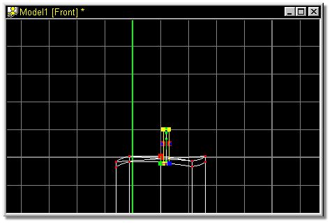
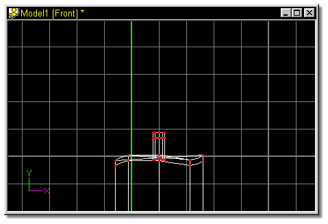
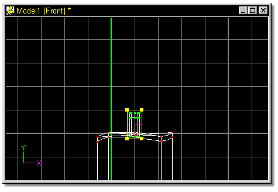
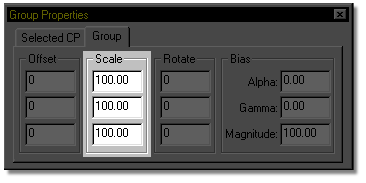
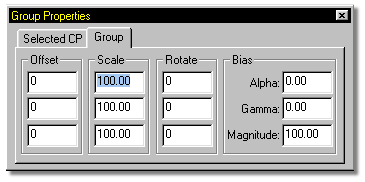
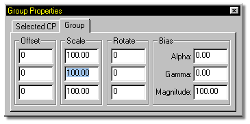
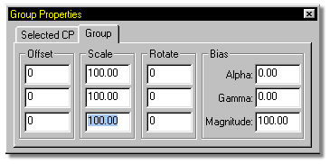
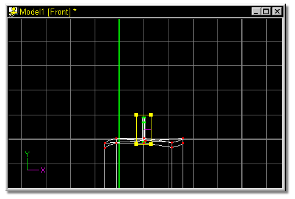

Figure 35 shows the screen after the pivot has been moved.

Figure 35
Click the Lathe button.
The result should look similar to figure 36.

Select the entire wick by clicking any point on it and pressing the “/” key to
group connected.

In this example the wick was a little large, and was adjusted by scaling. To
scale the selected points, locate the scale section of your property panel once
again.

Highlight the top entry by double clicking in the numeric entry box. The
default scale, 100 will highlight blue as shown in figure 38B.

Type 25, and press the Tab key.
The middle numeric entry box will highlight blue. Notice also that the
previous box reset to 100% after scaling.

Scaling is not necessary along the Y axis, so to avoid making changes to the Y
value, press the Tab key. The next numeric entry box will highlight blue.

Type 25 and press the Tab key.
The model window should look similar to figure 39.
